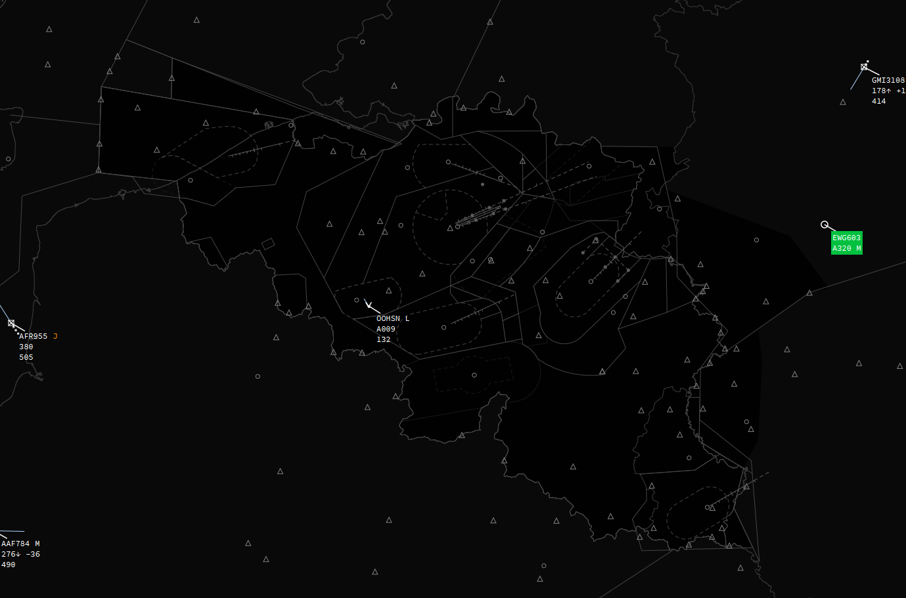

Welcome to the IVAC2 EBBu FIR Definition Manual

Welcome to the IVAC2 EBBU FIR Definition (FIRDEF) Manual.
This manual will guide you through the features of the EBBU FIRDEF such as its maps, labels, symbols, ... This manual does NOT teach you how to work with IVAC2. If you would like to learn more about IVAC2 itself please visit the Terminal2 Solutions Documentation.
The EBBU FIRDEF is still work in progress and not complete. This means the manual might not cover everything that is present in the FIRDEF. The manual itself is also work in progress so don't be alarmed when there are things missing, they will be gradually added.
If you would encounter problems, have suggestion or anything else you want to share about the FIRDEF, please post them on the correspond topic in the IVAO BeLux Region Forum section.
And as a final note, IVAC2 FIRDEF works different from IVAC1 sectorfiles. You cannot alter maps or colours yourself. IVAC2 will check for a new version of the FIRDEF on each start-up so any changes make locally will be overwritten. If you have suggestion please refer to the IVAO BeLux Forum as explained above.